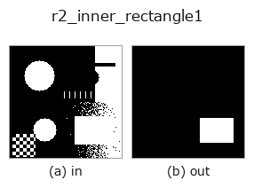

region op• Datenarten: region → region
• Aufruf: fullseye.apply(img, "r2_inner_rectangle1", a=0.5, b=0.5) (das 2-D-Modell ist ein Bild plus zwei skalare Regler a,b∈[0,1])
• HALCON-Äquivalent: inner_rectangle1 (Bedeutung und Parameter sind in der HALCON-Referenz nachzulesen)

*Die Abbildung ist die tatsächliche Ausgabe auf einer synthetischen 128×128-Eingabe. Links Eingabe, rechts Ausgabe. Punktwolken als Draufsicht-Streudiagramm (Helligkeit = z), 1-D-Reihen als Linie, Volumen als Maximum-Projektion entlang z, Videos als mittleres Bild, komplexe Bilder als Betrag; Rückgabewerte, die kein Bild ergeben, werden als Werte gezeigt.*
Regler a durchfahren (0,1 / 0,5 / 0,9, der andere Regler auf Standard):
▸ r2_inner_rectangle1: knob a sweep (docs site)
*Regler b ändert die Ausgabe nicht (gemessen: identisch bei 0,1 / 0,5 / 0,9).*
Stufen (die vorangehenden Ops → dieser Op, von links nach rechts):
▸ r2_inner_rectangle1: stages (docs site)
Auf anderen Bildern (synthetische Szene / Foto / Münzen. Obere Reihe: Eingaben, untere Reihe: deren Ausgaben. Regler auf Standard):
▸ r2_inner_rectangle1: other inputs (docs site)
Größtes achsenparalleles einbeschriebenes Rechteck (a schrumpft das gezeichnete Rechteck; a=0 = exakt).
> Die ausführliche Beschreibung unten ist der Originaltext — Zusammenfassung und Überschriften sind übersetzt.
領域に内接する軸並行矩形のうち面積最大のものをマスクとして描く。前景マスク
(`> 0.5`)に対し、行ごとに各列の連続前景高さを積み、単調スタックで最大
長方形を求めるヒストグラム法(O(H*W))で厳密解を得る。同面積の候補が複数
あるときは走査順で最初に見つかったものを採る。
`a は描く矩形を内側へ縮める割合で、f = 0.3*a` として高さを
`round(hh*f/2) 行ずつ、幅を round(ww*f/2) 列ずつ両側から削る。a=0` で
厳密な最大内接矩形、`a=1` で各辺が約 15% ずつ縮む(面積ではおよそ半分)。
縮めすぎて辺が潰れる場合は中央の 1 行 / 1 列に丸める。`b` は未使用。
返り値は入力と同形の float64 0/1 マスク。前景が無ければ全零。矩形は画素境界に
そろうため `a=0 の出力は必ず領域に含まれる(r2_inner_circle` と異なり
はみ出さない)。孔のある領域では孔を避けた矩形になるので、孔を無視したい
ときは前段に `fill_up`。回転した矩形は扱えない(軸並行のみ)。外接側の
軸並行矩形は `r2_smallest_rectangle1`。
• Leitfaden zur Familie gallery2d_region
• Katalog der Beispieldaten (Download-URLs / Lizenzen) — 2-D nutzt skimage.data (BSD/Public Domain) plus synthetische Bilder, 3-D nennt Download-URLs echter Datenquellen (Stanford, PDS, …).
• Herkunft und Literatur der Operatoren — die Quellen der Forschung/Verfahren, auf denen diese Operatorfamilie beruht.
• Der kanonische Algorithmus (Autor, Jahr) und seine Anwendungen stehen im Familienleitfaden oben.
Das Programm unten ist nachweislich lauffähig (gleiche Eingabe wie die Abbildung). In der Studio-Hilfe wird dieser Block zu Schaltflächen, die es sofort laden und ausführen.
threshold 0.50 0.50 r2_inner_rectangle1 0.50 0.50
▸ Load this pipeline · Load & run
• gallery2d_region — py -3.11 examples/gallery2d_region.py
region als Eingabe)identity · reg_erode · reg_dilate · reg_open · reg_close · fill_holes · select_largest · remove_small
region)reg_erode · reg_dilate · reg_open · reg_close · fill_holes · select_largest · remove_small · invert_region
*Provenance: ops.py — 2D Operator-Registry. Diese Notiz wird von tools/opdocs.py md erzeugt (nicht von Hand bearbeiten).*
© 2026 Kazufumi Furuse — Fullseye operator documentation. Licensed under Apache-2.0.
{kind=link}
{kind=link}
{kind=link}